01Сборка
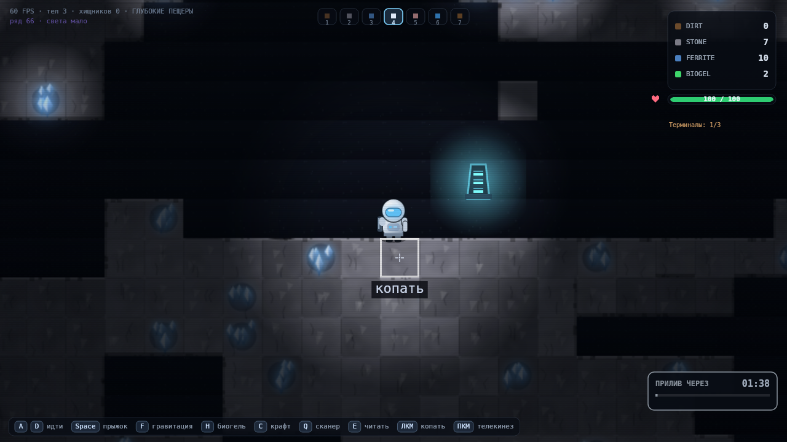
GRAVITY: VOID — M6
A / D — идти · Space — прыжок · F — гравитация · H — биогель · C — крафт · Q — сканер · E — прочитать терминал · ЛКМ — действие режима · ПКМ — телекинез
02Критерии M6
| Критерий | Как сделано | |
|---|---|---|
| Игрок — персонаж, а не капсула | Запечённый спрайт 28×36: купол шлема с радиальным градиентом, зеркальный блик,
визор с shadowBlur, ранец с баллоном, плечи, грудная панель, ремень,
две ноги в противофазе (6 кадров шага) |
да |
| Броня визуально отличается | Отдельный ключ спрайта: стальные пластины, наплечники с обводкой, заклёпки, тёмный визор с красным сканером вместо цианового | да |
| Жук — насекомое | Панцирь горбом (кривые Безье), три пары лап бедро→голень→коготок с точками суставов, хитиновые сегменты дугами, гребень шипов, фасеточные глаза с пятиточечной сеткой, жвала | да |
| Процедурная текстура камня и земли | Три варианта подложки на породу, пятна, крупинки и корни у земли, слои и прожилки у камня, сколы на гранях у пустоты, швы между тайлами | да |
| Кристаллы феррита светятся | Ореол в режиме lighter, четыре многогранника с градиентом и
shadowBlur, светлая грань |
да |
| Освещение реагирует на источники | Тьма вырезается маской: фонарь (мерцает ±9 % и ±13.7 Гц), кристаллы в кадре, терминалы (пульс 2.4 Гц), якоря, биогель. Цветное свечение — аддитивно сверху | да |
| FPS не упал, кэш работает | Спрайты и тайлы пекутся один раз в offscreen-canvas: 10 подряд кадров не строят ни одного нового спрайта; всего в кэше 31 картинка. Мир по-прежнему один блит | цена ×1.07 |
review.html обновлён |
Эта страница | да |
Внешних ассетов нет: ни одного .png в рантайме — вся графика рисуется кодом.
03Что работает
Игрок читается как человек в скафандре
- Шлем — купол с градиентом от почти белого к серому: объём без единого внешнего файла.
- Визор светится и отражается:
shadowBlur 10плюс светлый блик внутри. - На бегу корпус заваливается вперёд на 0.14 рад — поза, а не покадровая анимация.
- Лазер на руке виден в темноте: красная аура включается только пока идёт резка.
Броня — другой силуэт, а не другой оттенок
- Наплечники выходят за габарит корпуса, поэтому силуэт меняется на глаз.
- Заклёпки, обводка пластин, тёмный визор с красным сканером.
- В HUD иконка та же, но в мире броню видно сразу — раньше отличался только оттенок.
Хищник похож на насекомое
- Горб сзади и голова ниже спереди — читается как жук, а не как овал с глазами.
- Шесть лап с суставами и коготками; при ходьбе фазы сдвинуты.
- Глаза горят красным с фасеточной сеткой, при агрессии
shadowBlurрастёт. - Раненый жук: трещины по панцирю, светлое тело, красная вспышка, полоска HP.
Порода перестала быть обоями
- Три варианта подложки плюс крупное пятно тона на 4×4 тайла: сетка не читается как плитка.
- Земля: пятна, 14 крупинок, камешки, корни-кривые. Камень: слои, прожилки, грани-блики.
- На гранях у пустоты — сколы: тайл перестаёт быть ровным квадратом.
- Верстак — один стол на два тайла: столешница с кромкой, ножки по краям, молоток, ключ, тиски.
Свет в глубине — настоящий
- Тьма лежит маской и вырезается
destination-out— источники реально открывают мир, а не рисуют пятно поверх. - Фонарь мерцает двумя частотами: круг света «дышит», но не мигает в ноль.
- Кристалл феррита освещает стену вокруг себя — руду видно до того, как её раскопали.
- Терминал пульсирует, у прочитанного свет гаснет — это ещё и индикатор прогресса.
Частицы говорят на языке материала
- Камень и феррит дают искры-штрихи (
lighter), земля — мягкую пыль. - Подбор ресурса: кольцо искр плюс короткая вспышка.
- Бег оставляет клубы пыли из-под ног по таймеру, а не каждый кадр.
04Дефекты и ограничения
Кадр подорожал на 7 %
- p50 8.77 мс против 8.16 в M5, p95 12.6 против 9.9. Причина — не тайлы (они те же один блит), а спрайты и маска света в глубине.
- Свет считается только в глубине, на поверхности цена нулевая — это осознанно.
Кэш спрайтов не ограничен
- Ключ включает кадр шага и состояние: 6 кадров × 2 (броня) × 2 (резак) × 2 (взгляд) плюс 8 фаз жука. Сейчас это 31 картинка и 4 из них — 1000-пиксельные маски.
- Растёт не бесконечно, но при добавлении врагов кэш придётся вытеснять (LRU).
Свет уважает только непрозрачность, а не стены
- Фонарь светит сквозь породу: за стеной видно её же силуэт. Тени по породе (raycast) не делались — это отдельная работа и заметная цена по CPU.
- Компенсация — радиусы источников: кристалл освещает примерно 1.5 тайла.
Искры вспыхивают ярко
- В момент слома камня в кадре оказывается 5–8 белых штрихов — красиво, но при частом копании это мерцание. Ядро искры намеренно небольшое, но заметное.
Один шейдерный эффект подделан
- Bloom — это аддитивные спрайты свечения, а не размытие кадра. Настоящий гауссов bloom стоил бы второй полный проход по экрану; в 2D при 32 px-тайлах разницы почти нет.
- Scanline статичен: полосы 1 px с шагом 3, собранные один раз в картинку.
Регрессия
- Все 263 прежние проверки зелёные. Три теста поправлены честно: подбор теперь даёт
pickup + 1частицу (вспышка), «один drawImage на кадр» заменён на «один блит буфера тайлов» — спрайты тоже блиты, — а проверка темноты ищет новую маску вместо старогоdrawDeepFog.
05Скоуп
| Что | Почему так | Что делать |
|---|---|---|
| Спрайтовая печь вместо покадровой отрисовки решение ради FPS |
Градиенты и shadowBlur на каждом кадре — это ровно тот приём, который роняет
2D-игру. Каждый кадр спрайта печётся один раз и дальше идёт одним drawImage. |
Фиксирую как архитектуру M6. |
Наклон корпуса — rotate, а не кадрыпо спеке |
Спека прямо оставляет процедурную деформацию вместо 8-кадровой ходьбы. | Ничего. |
| Свет включается за 8 рядов до глубины трактовка |
Иначе на границе зоны картинка щёлкает из полного света в темноту. | Фиксирую: плавный вход, дальше полная тьма. |
| Цветное свечение источников — только в глубине трактовка |
На поверхности и в зале светло, аддитивный ореол там выглядит грязью. | Нужно и наверху — одна строка в drawLighting. |
| Тени от стен не считаются вне скоупа |
В спеке 4.5 только «мерцает, освещает, пульсирует». Raycast-тени — это отдельный милстоун с бюджетом по CPU. | Не делал. |
| Scanline — 5 % черноты трактовка |
Больше читается как брак монитора, меньше — не видно вообще. | Отключается одним числом в CFG.post. |
06Запросы ревью
1. Тяжело ли дался отказ от внешних ассетов?
Честно: первые версии игрока и жука были хуже, чем геометрия M4 — масштаб внутри спрайта не совпадал с миром, и персонаж выглядел как наклейка. Помогло не «нарисовать лучше», а сменить приём: рисовать в координатах спрайта с явной сеткой (шлем 0–17, корпус 14–30, ноги 28–36), печь в 2× и блитить обратно. Сложнее всего — металл: без текстур блеск делается только градиентом и одной белой точкой, и это работает лишь при свете слева.
2. Где пришлось кэшировать в offscreen-canvas ради FPS?
В трёх местах. Спрайты — иначе shadowBlur на визоре и
глазах жука считался бы каждый кадр. Подложка тайла — 26 000 тайлов с собственным
createLinearGradient стоили бы десятки мс на старте, поэтому у породы три запечённых
варианта. Пост-обработка — вигнетка и сканлайны собраны в одну картинку и пересобираются
только на resize. Плюс маска тьмы живёт в отдельном буфере: на главном канвасе
destination-out стёр бы сам мир.
3. Что стало выглядеть лучше всего?
Свет в глубине. До M6 там была заливка тумана поверх картинки, и пещера читалась как «выключили экран». Сейчас кристалл феррита подсвечивает стену, терминал пульсирует, а фонарь мерцает — и то же самое место выглядит месторождением, а не чёрным прямоугольником. Из спрайтов ближе всех к задуманному — раненый жук: трещины по панцирю и полоска HP сразу объясняют, что попал.
07Скриншоты
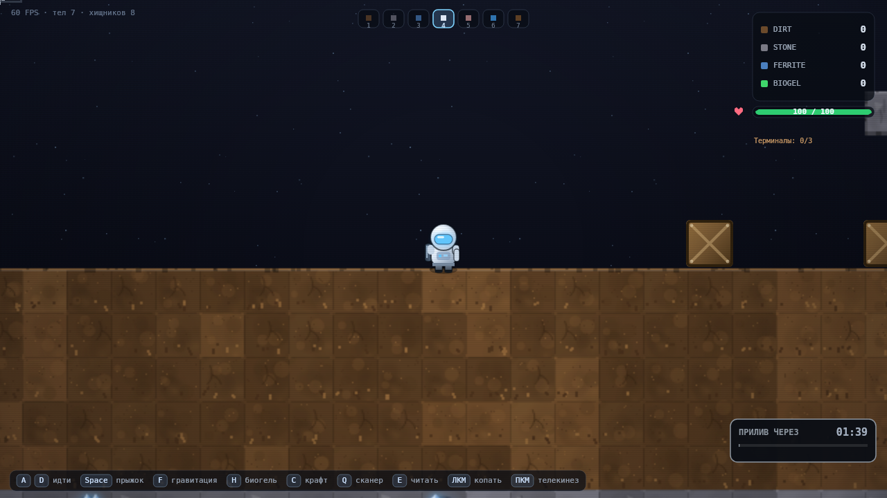
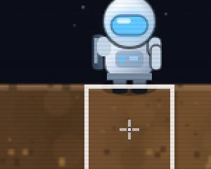
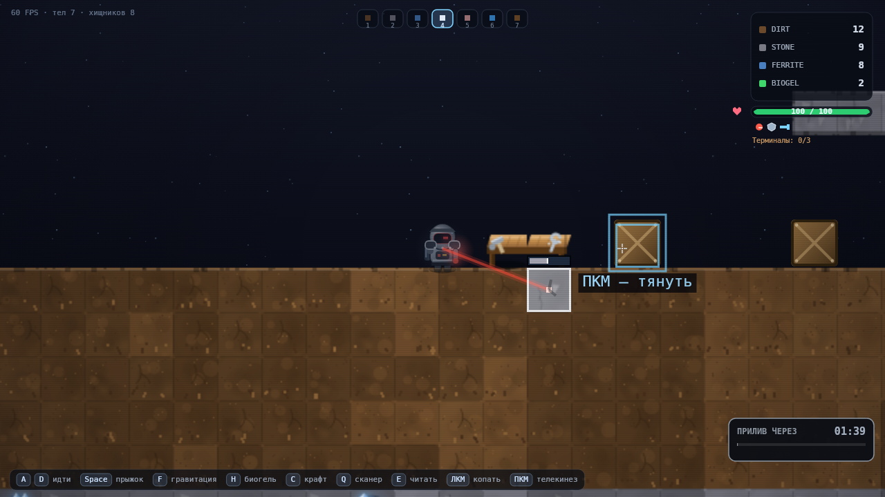
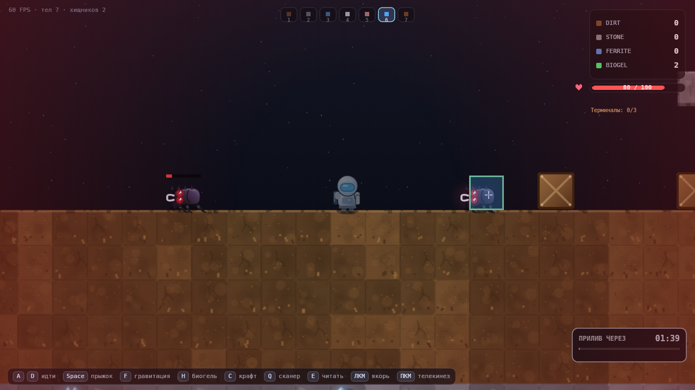
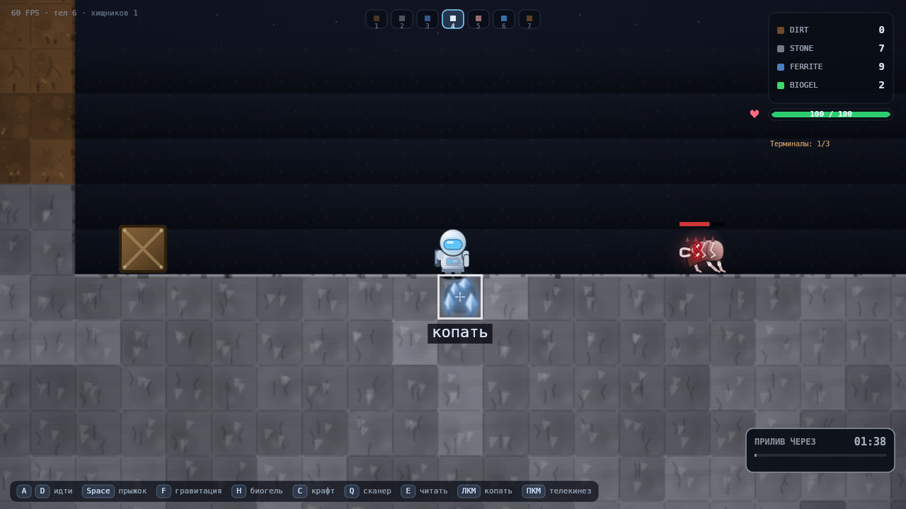
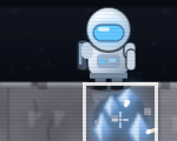
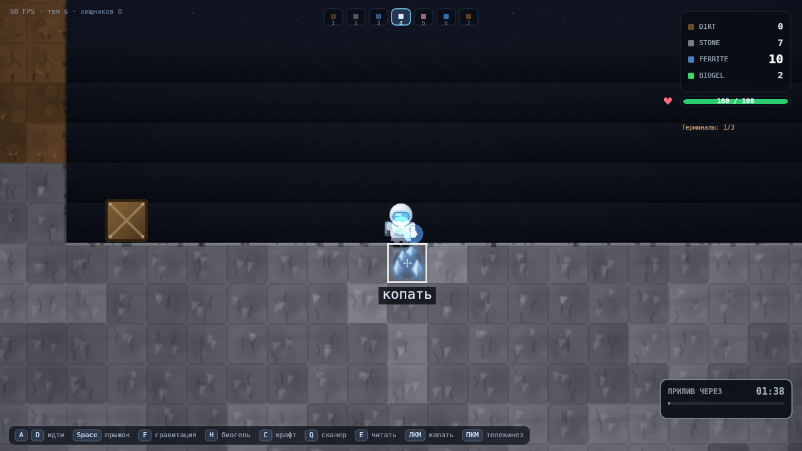
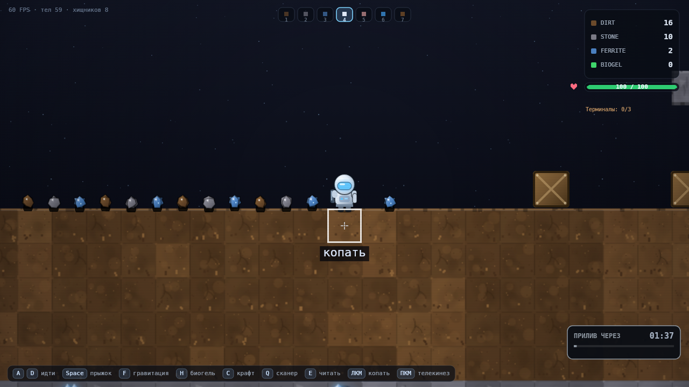
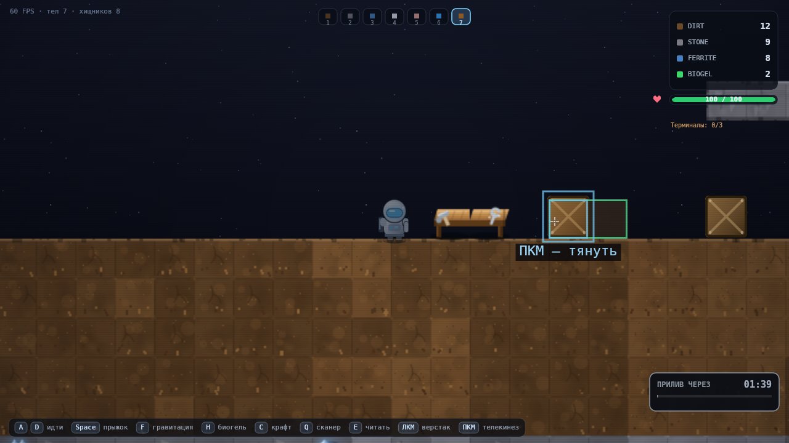
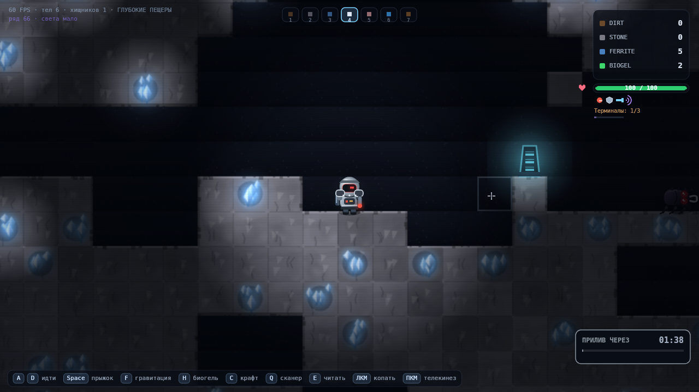
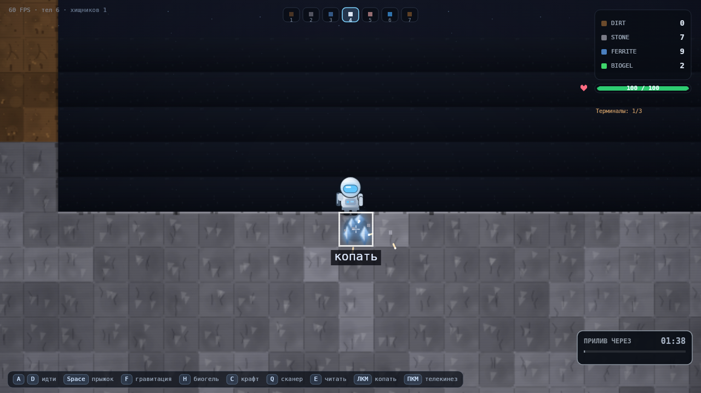
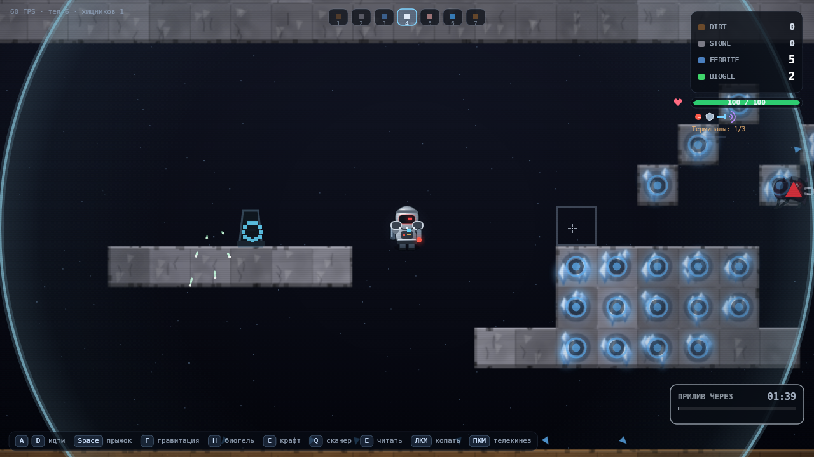
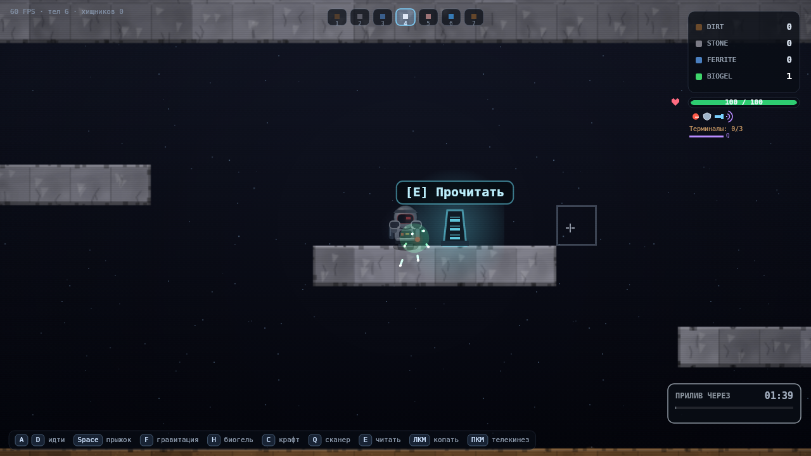
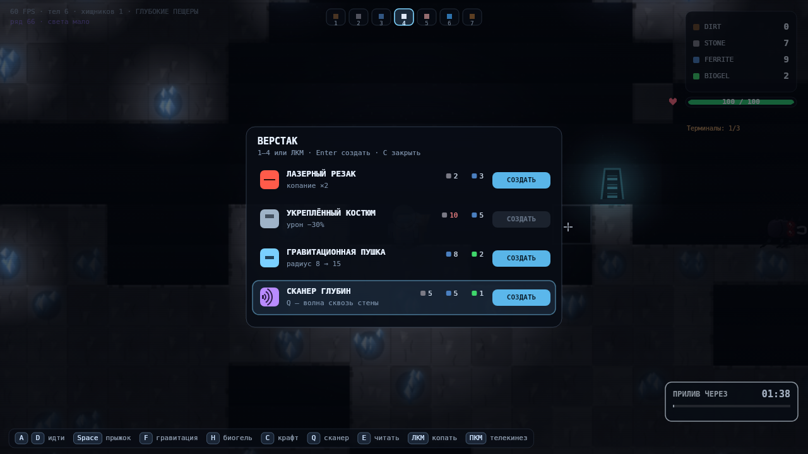
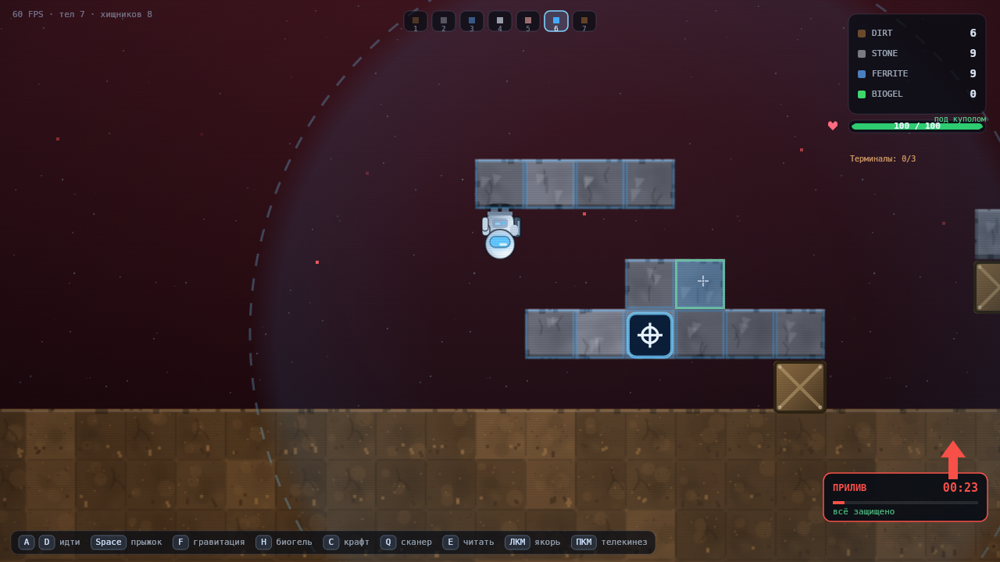
08Как проверено
# 288 автопроверок логики, физики и критериев M0–M6 cd tools node verify.mjs # → 288/288 проверок пройдено node screenshots.mjs # → 34 кадра в ../screenshots node perf.mjs # → p50 8.77 мс, p95 12.6 мс на кадр node verify-review-page.mjs # → структура страницы и запуск игры во фрейме
Что покрыто в M6
- Кэш спрайтов: 10 подряд кадров не пекут ни одной новой картинки, кэш не разрастается.
- Ключи спрайтов: броня, резак, кадр шага и ранение дают разные спрайты, одинаковое состояние — тот же самый объект.
- Подложка тайла — offscreen-canvas, три варианта тона, у феррита отдельный тип.
- Свет: на поверхности маска не рисуется вовсе, в глубине включается полностью, источников больше одного и их число ограничено.
- Пост-обработка собирается один раз, HUD рисуется после затемнения.
- Частицы: камень даёт искры, земля — пыль и ни одной искры, подбор — вспышку.
- Пыль из-под ног проверена реальным бегом на 60 кадров, а не телепортом.
- Кадр в глубине со светом укладывается в бюджет 25 мс (headless).
Чего проверки не делают
- Не оценивают красоту: «похож ли жук на насекомое» — это глазами, скриншоты выше.
- Не браузерный FPS: цифры — время JS+draw в headless-canvas.
- Не ловят мерцание искр и читаемость визора в темноте — только руками.